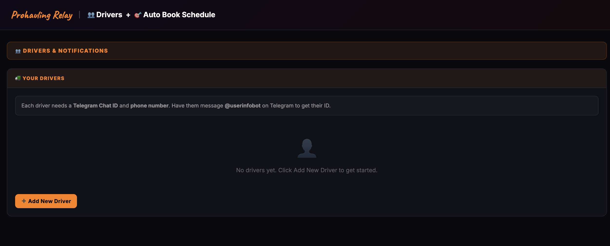
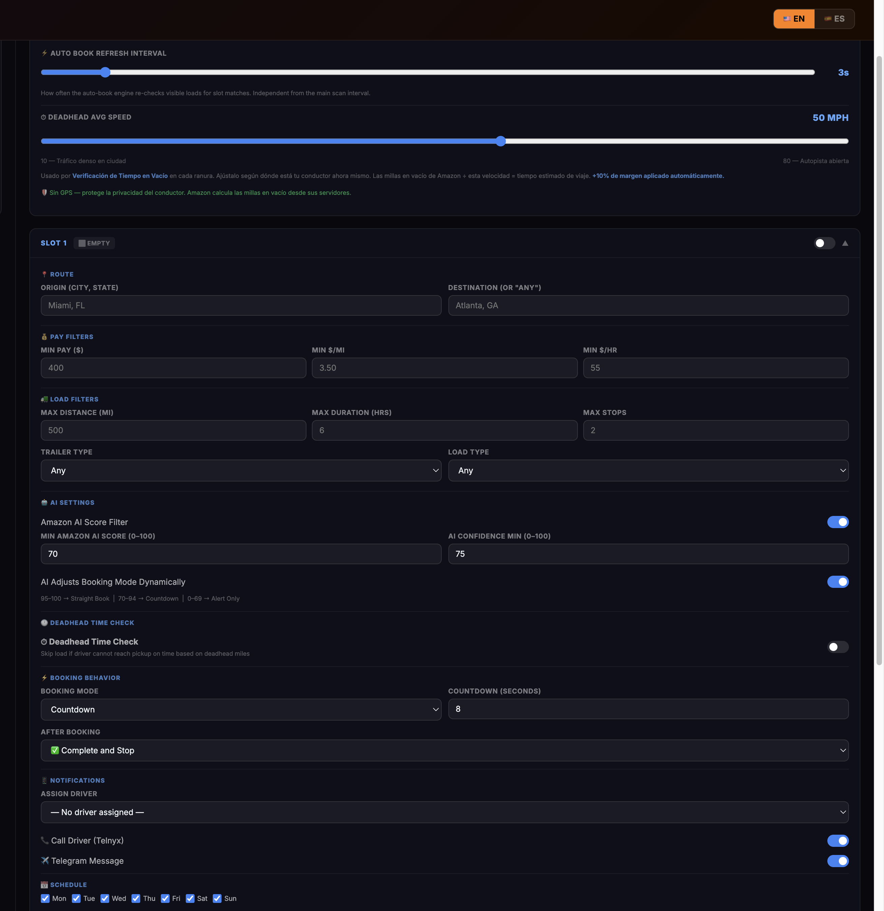
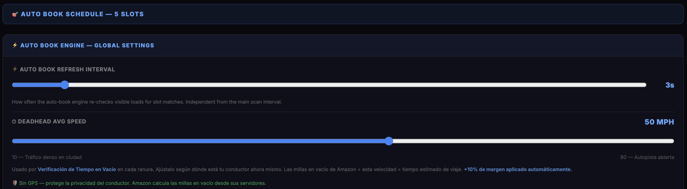

1
Open Drivers & Auto Book Schedule
Click the Drivers + Auto Book Schedule tab in the extension. If you haven't added any drivers yet, you'll see the empty state below. Before the engine can book anything, it needs at least one driver profile with a Telegram ID and phone number.

Click here to add your first driver
Tip: Each driver needs a Telegram Chat ID. Have them message @GetMyid_Bot on Telegram — it replies with their numeric chat ID instantly.
2
Add a Driver Profile
Click + Add New Driver and fill in the form. Enter the driver's full name, phone number (with country code), Telegram Chat ID, trailer type, and preferred language. Truck is optional — it's just for your reference.

Tip: The Language field controls the language of the phone call alerts (via Telnyx) and on-screen alerts for that driver — choose English or Spanish.
3
Set Global Settings & Configure a Slot
Once a driver is saved, you'll see the Global Settings and your first booking slot. Set the Auto Book Refresh Interval (how often the engine re-checks loads) and your Deadhead Avg Speed (used to estimate travel time). Then configure Slot 1 with your route, minimum pay, and filters.

Tip: Enable Deadhead Time Check in the slot — it skips a load automatically if the driver can't reach the pickup on time based on their current location and your deadhead speed setting.
4
Review the Full Slot Configuration
Each slot has three main sections: Pay & Load Filters (minimum payout, $/mile, distance, duration), AI Settings (AI score threshold, confidence minimum, dynamic booking mode), and Schedule (which days and hours the slot is active). Set them to match your preferred loads.

Tip: Use AI Adjusts Booking Mode Dynamically — the engine switches automatically between Straight Book, Countdown, and Alert-Only based on the AI score, so the best loads book instantly and borderline loads give you time to decide.
5
Turn It On and Walk Away
Once your driver and slots are configured, switch the main Auto-Booking toggle to ON from the extension panel. Leave the load board open in Chrome. Prohauling Relay will monitor every load in the background, apply all your filters, and auto-book qualifying loads — even while you're away from the screen.

Tip: You can run up to 5 booking slots per driver, each with completely independent route, filter, and schedule settings. Use multiple slots to cover different lanes at the same time.